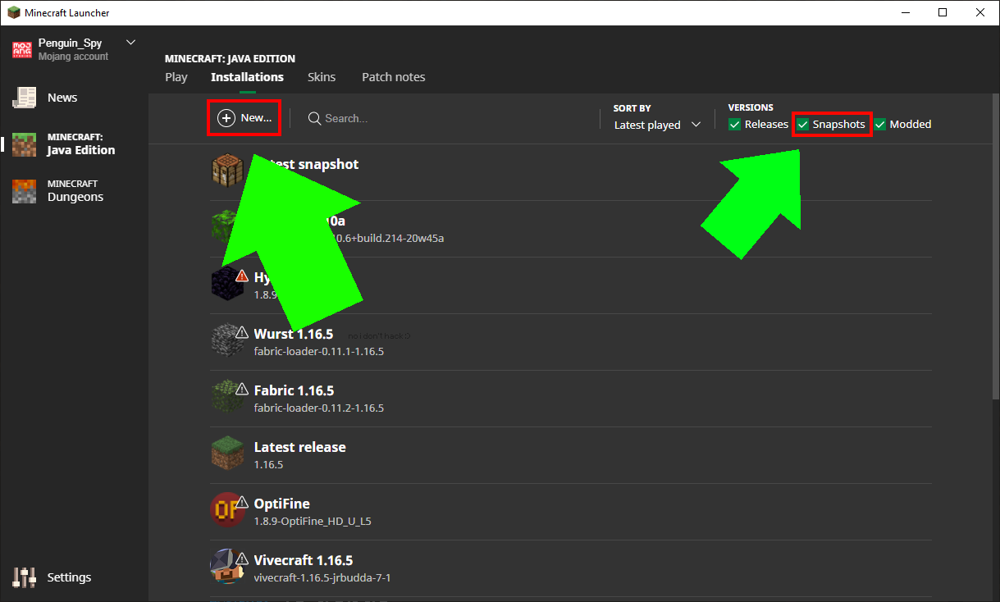
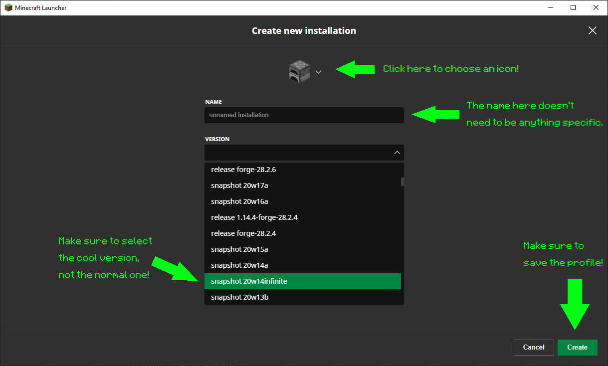
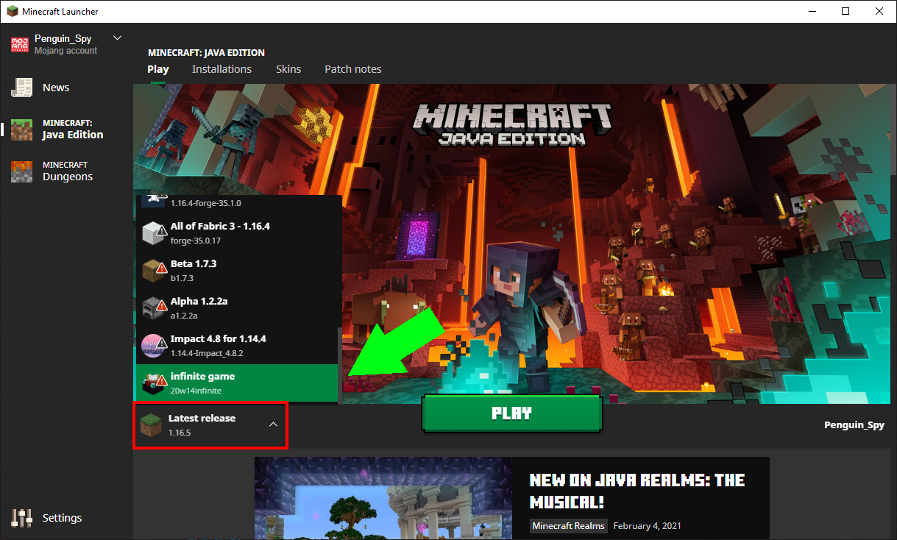

How to install a specific Minecraft version
Open the minecraft launcher, then click on the "installations" tab at the top.

Make sure the check box to the left of "Snapshots" is checked, then click the "(+) New" button to create a new profile.

Next, open the version dropdown menu and select "snapshot 20w14infinite", not just normal 20w14a! You may have to scroll down a bit to find the snapshot, it should be below 1.16-pre1 & above 1.15.2.

Finally, (optionally) give the installation a name of your choosing and an icon by clicking on the furnace, then click "Save" in the bottom right to add the profile.
Go back to the Play tab, and then choose the profile you just created in the bottom left, where it probably currently says "Latest version".

Then click the big green "Play" button to start!
When you're done playing this snapshot, remember to go back and choose the latest version. (Repeat image #4 but choose "Latest version").